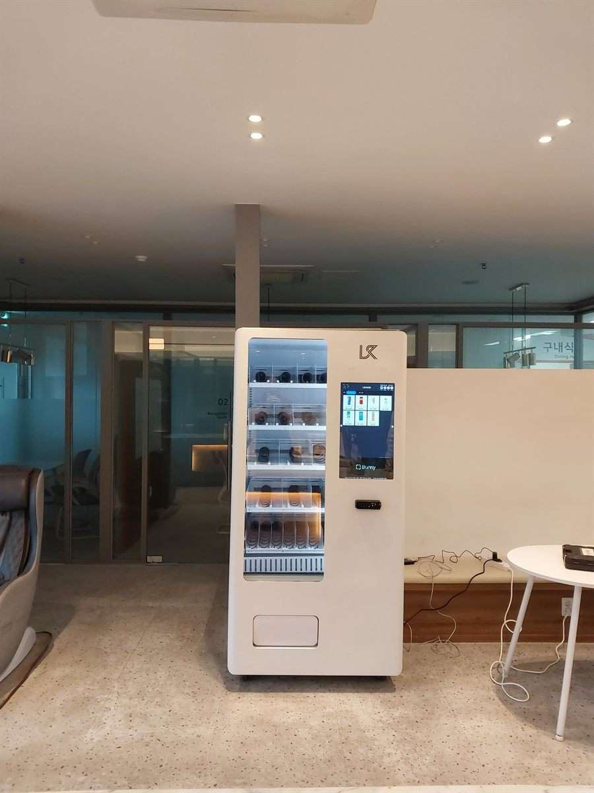

성북구 무인자판기 설치
사무실 휴게실 냉장 자판기 1대

사무동 휴게 공간은 자판기를 놓기 쉬운 자리처럼 보이지만 의외로 까다롭습니다. 사람이 늘 있는 곳이 아니라 특정 시간에만 몰리기 때문입니다. 구내식당이 붙어 있으면 더 그렇습니다. 식사 시간에는 아무도 자판기를 쳐다보지 않다가, 그 시간이 지나면 갑자기 찾기 시작합니다.
이번 성북구 현장도 그런 구조였습니다. 한쪽은 구내식당, 반대쪽은 회의실과 응접 공간이고 그 사이 통로에 소파와 테이블이 놓인 라운지였습니다. 담당자가 처음 요청하신 것은 커피 자판기 한 대였는데, 자리에 서서 오전·오후 사람 흐름을 보고 나서 커피가 아니라 냉장 한 대로 방향을 바꿨습니다. 그 이유부터 적겠습니다.
성북구 사무실 휴게실에 맞는 구성
커피는 이미 탕비실과 구내식당 양쪽에 있었습니다. 같은 것을 하나 더 놓으면 매출이 나뉘기만 하고 새로 생기는 수요가 없습니다. 반면 라운지에서 비어 있던 쪽은 식사 시간 외의 간단한 끼니였습니다. 식당 운영 시간을 놓친 분, 회의가 길어져 끼니를 거른 분, 늦게까지 남는 분들이 건물 밖으로 나가고 있었습니다. 그래서 샌드위치·컵과일·요구르트처럼 바로 먹을 수 있는 냉장 품목 중심으로 다섯 단을 짰고, 음료는 아래 두 단에만 넣었습니다.
냉장 기종은 상온 기종보다 신경 쓸 것이 하나 더 있습니다. 문을 여닫는 횟수가 아니라 선반 안쪽 온도가 고르게 유지되는지가 중요합니다. 그래서 기둥 옆 벽면을 골랐습니다. 뒤쪽이 트여 있어 열이 빠지고, 에어컨 바람이 바로 때리지 않는 자리입니다. 결제는 카드와 간편결제만 열었습니다. 사원증과 휴대폰만 들고 다니는 분들이라 현금함은 오히려 관리 부담이 됩니다.
- 기종 — 냉장 1대. 선반 5단 전부 냉장, 유리문 전면 진열
- 품목 — 샌드위치·컵과일·요구르트 등 간편식 중심, 아래 두 단은 음료
- 자리 — 구내식당과 회의실 사이 라운지 기둥 옆, 뒤쪽이 트인 벽면
- 결제·관리 — 카드·간편결제 전용, 현금함 없음, 재고·온도 원격 확인
사무동 자판기에서 좋았던 점과 걸리는 점
좋았던 쪽은 건물 밖으로 나가던 걸음이 줄었다는 것입니다. 가까운 편의점까지 왕복하면 짧아도 십 분이 넘습니다. 그 시간이 사라지니 담당자 입장에서는 업무 공백이 줄었고, 직원 입장에서는 늦은 시간에도 선택지가 생겼습니다. 라운지에 사람이 머무는 시간이 늘어난 것도 예상 밖의 효과였습니다.
걸리는 점도 그대로 적겠습니다. 첫째, 유통기한이 짧은 품목은 손이 더 갑니다. 샌드위치나 컵과일은 과자와 달리 며칠 단위로 회전해야 하고, 안 나가면 그대로 버리는 손실이 됩니다. 처음 한두 달은 요일별로 몇 개가 나가는지 보면서 수량을 조절해야 합니다. 둘째, 사무동은 주말과 연휴에 수요가 거의 없습니다. 금요일 보충량을 평일과 똑같이 잡으면 월요일에 버릴 것이 생깁니다. 셋째, 냉장 기종은 상온보다 전기요금이 더 듭니다. 큰 금액은 아니지만 관리비를 나눠 내는 건물이면 미리 이야기해 두시는 편이 낫습니다.
성북구, 이런 자리가 잘 됩니다
성북구는 대학과 주거지가 겹쳐 있는 구조라 자리마다 성격이 꽤 다릅니다. 안암동은 고려대학교를 중심으로 학기 중과 방학의 차이가 크고, 정릉동은 국민대학교, 돈암동은 성신여자대학교, 삼선동은 한성대학교가 각각 동네 흐름을 만듭니다. 길음동과 장위동은 아파트 단지가 크게 들어서 아침저녁 움직임이 몰리고, 종암동과 월곡동은 지하철역을 낀 생활 상권이 이어집니다.
사무동·업무 공간 자판기로 보면 사람 수보다 머무는 시간이 중요합니다. 직원이 하루 종일 같은 건물에 있는 사무동, 야간까지 돌아가는 연구·기술 공간, 민원인과 직원이 같이 쓰는 기관 로비가 잘 맞습니다. 반대로 외근이 많아 낮에 자리가 비는 사무실은 냉장보다 상온 품목 위주로 작게 시작하시는 편이 안전합니다.
성북구 서비스 지역
성북동 · 삼선동 · 동선동 · 돈암동 · 안암동 · 보문동 · 정릉동 · 길음동 · 종암동 · 월곡동 · 장위동 · 석관동
성북구 전역에서 방문 상담이 가능합니다. 맞닿은 강북구·도봉구·노원구·동대문구·종로구·중랑구도 같은 담당자가 함께 다닙니다. 지역별 안내는 성북구 무인자판기 설치 안내 페이지에서 보실 수 있습니다.
성북구 무인자판기, 이렇게 시작하시면 됩니다
전화나 상담 신청으로 건물 주소만 남겨 주시면 됩니다. 담당자가 나가서 놓을 자리의 벽면 길이와 천장 높이, 콘센트 위치, 사람 동선을 확인합니다. 사무동은 건물에 이미 무엇이 있는지를 먼저 보는 것이 중요합니다. 탕비실·구내식당·근처 편의점과 겹치지 않는 자리를 찾아야 새 수요가 생기기 때문입니다. 설치일이 정해지면 끝이며, 설치비는 받지 않습니다. 기계는 구입·렌탈·임대 중에서 고르실 수 있습니다.
처음부터 냉장으로 갈지 망설여지시면, 상온 한 대로 시작해 어떤 품목이 나가는지 확인한 뒤 바꾸는 방법도 있습니다. 사무 공간은 근무 형태에 따라 수요가 크게 달라져서, 한 번에 맞추기보다 보고 고치는 순서를 권해 드립니다.
※ 사진은 픽프리가 시공한 설치 사례이며, 글에 적힌 지역의 현장 사진은 아닙니다.
함께 많이 찾는 키워드
성북구 무인자판기 · 성북구 자판기 설치 · 성북구 자판기 임대 · 성북구 자판기 렌탈 · 서울 무인자판기 · 서울 자판기 설치 · 성북동 자판기 · 삼선동 자판기 · 돈암동 자판기 · 안암동 자판기 · 보문동 자판기 · 정릉동 자판기 · 길음동 자판기 · 종암동 자판기 · 월곡동 자판기 · 장위동 자판기 · 석관동 자판기 · 사무실 자판기 · 휴게실 자판기 · 사무동 자판기 · 냉장 자판기 · 간편식 자판기 · 스마트 자판기 · 카드 자판기 · 무인키오스크 설치 · 자판기 설치비용 · 자판기 원격관리 · 무인창업